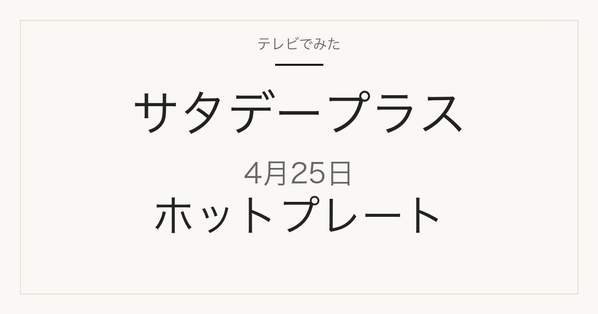

1位／番組掲載価格 18,700円
タイガー魔法瓶
ホットプレート 〈ダイニングプレート〉 CRL-A201

メーカー商品で、スーパーや通販で扱われます。番組掲載と同じ単品です。タイガー魔法瓶公式楽天店の同一ページでカラー（アイアンブラック CRL-A201KI／セラミックホワイト CRL-A201WC）を選ぶ形で、番組では色の指定なし。ページ価格18,700円（2026-09-09 10:23確認）で番組掲載価格と一致。
テレビ紹介商品の記録メディア
2026年4月25日（土）放送
「ひたすら試してランキング」で調査された5品

2026年4月25日放送のサタデープラス「ひたすら試してランキング」ホットプレートの1位は、タイガー魔法瓶「ホットプレート 〈ダイニングプレート〉 CRL-A201」（番組掲載価格18,700円）です。全5品の番組掲載価格は3,990円から18,700円です。このうち5品は楽天市場で販売ページを確認できました（販売単位が番組掲載と異なる場合があります）。
この記事には広告・アフィリエイトリンクが含まれます。順位・商品名・番組掲載価格は番組公式情報で確認しています。価格は2026年4月25日時点の番組調べで、現在の販売価格・在庫・送料は販売先で確認してください。容量・入数は商品名から読み取れる範囲で記載し、確認できないものは「未確認」としています。
番組の順位は番組独自の調査によるもので、当サイトの評価ではありません。
| 順位 | 商品名 | メーカー | 番組掲載価格 | 容量・入数 | 購入先 |
|---|---|---|---|---|---|
| 1位 | ホットプレート 〈ダイニングプレート〉 CRL-A201 | タイガー魔法瓶 | 18,700円 | 未確認 | 楽天市場（販売ページを確認） |
| 2位 | 深型ホットプレート | 無印良品 | 4,990円 | 未確認 | 楽天市場（販売ページを確認） |
| 3位 | STAN.ホットプレート EA-FA10 | 象印マホービン | 16,500円 | 未確認 | 楽天市場（販売ページを確認） |
| 4位 | スクエアホットプレート 「Tatte!」 WA2C04 | ニトリ | 3,990円 | 未確認 | 楽天市場（販売ページを確認） |
| 5位 | ラッセルホブス ベーシックホットプレート 3100JP | 大石アンドアソシエイツ | 6,600円 | 未確認 | 楽天市場（販売ページを確認） |
1位／番組掲載価格 18,700円
タイガー魔法瓶
メーカー商品で、スーパーや通販で扱われます。番組掲載と同じ単品です。タイガー魔法瓶公式楽天店の同一ページでカラー（アイアンブラック CRL-A201KI／セラミックホワイト CRL-A201WC）を選ぶ形で、番組では色の指定なし。ページ価格18,700円（2026-09-09 10:23確認）で番組掲載価格と一致。
2位／番組掲載価格 4,990円
無印良品

無印良品の自社商品で、無印良品の店舗や公式通販で扱われます。番組掲載と同じ単品です。番組掲載に型番はありませんが、無印良品公式楽天店の現行型番 MJ-HPFK2 でページ価格4,990円（2026-09-09 10:23確認）が番組掲載価格と一致します。旧型 MJ-HPFK1 の二次流通品とは型番で区別できます。
3位／番組掲載価格 16,500円
象印マホービン

メーカー商品で、スーパーや通販で扱われます。番組掲載と同じ単品です（EA-FA10-BA ブラック。他色の有無はメーカー公式で未確認）。販売店はLIFE LUCK（正規品表記あり）。
4位／番組掲載価格 3,990円
ニトリ

ニトリの自社商品で、ニトリの店舗や公式通販で扱われます。番組掲載と同じ単品です（ニトリ公式楽天店、WA2C04 ブラック、玄関先迄納品）。ページ価格3,990円（2026-09-09 10:23確認）で番組掲載価格と一致。ただし同時刻の確認では在庫0の「お取り寄せの為10月上旬以降のお届け予定」表示（注文は受け付けるお取り寄せ扱い）。楽天でWA2C04を扱うのはこの1店のみ（2026-09-09 10:24 楽天市場検索で確認）。ニトリネット公式の商品ページ https://www.nitori-net.jp/ec/product/2113400001398/ も存在（2026-09-09 10:27 HTTP 200確認）。
5位／番組掲載価格 6,600円
大石アンドアソシエイツ

メーカー商品で、スーパーや通販で扱われます。番組掲載と同じ単品です（3100JP、専用レシピブック付きはメーカー標準付属）。販売店は雑貨ショップドットコムで「レビュー特典付」は店舗独自特典。ページ価格6,600円（2026-09-09 10:23確認）で番組掲載価格と一致。
MBS「サタプラ」ひたすら試してランキング ホットプレート（2026年4月25日放送）
順位・商品名・番組掲載価格は2026年4月25日時点の番組公式ページによります。MBS公式サイトは直近の放送回のみ公開しているため、この回の公式ページは現在閲覧できません。上のリンクはインターネットアーカイブに保存された公式ページのコピーです。価格は放送時点の番組調べで、現在の販売価格・在庫・送料は販売先で確認してください。
公開：2026年9月9日／最終更新：2026年9月9日